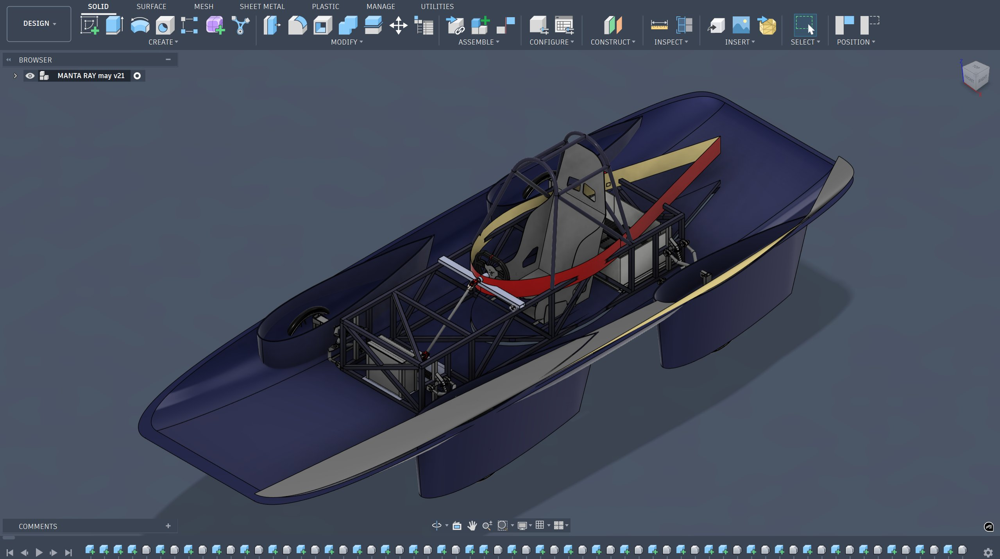
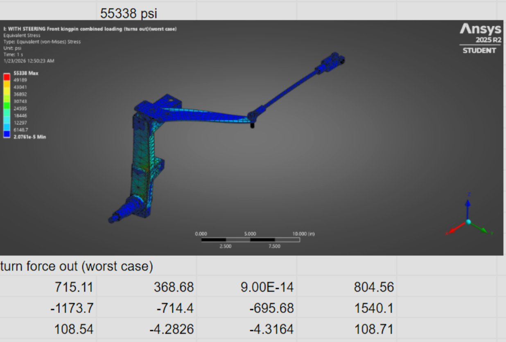
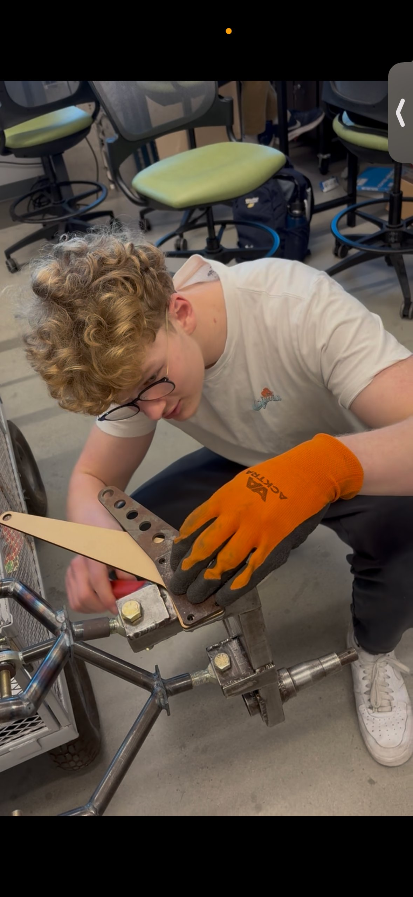
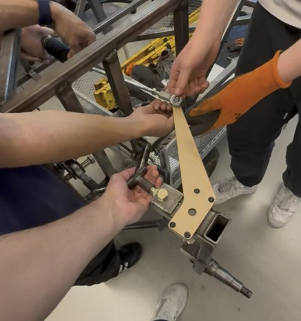
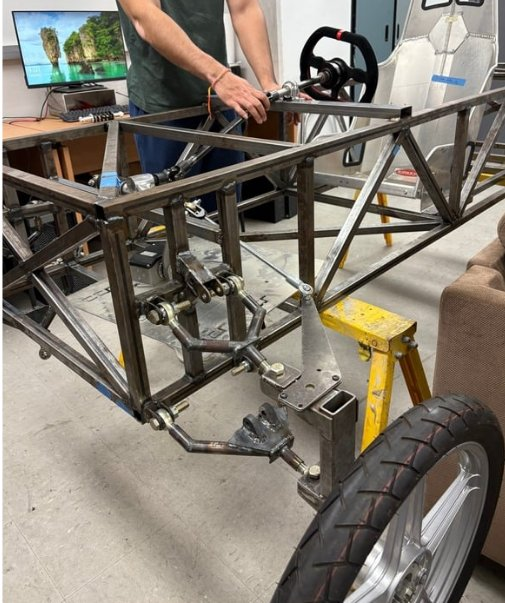
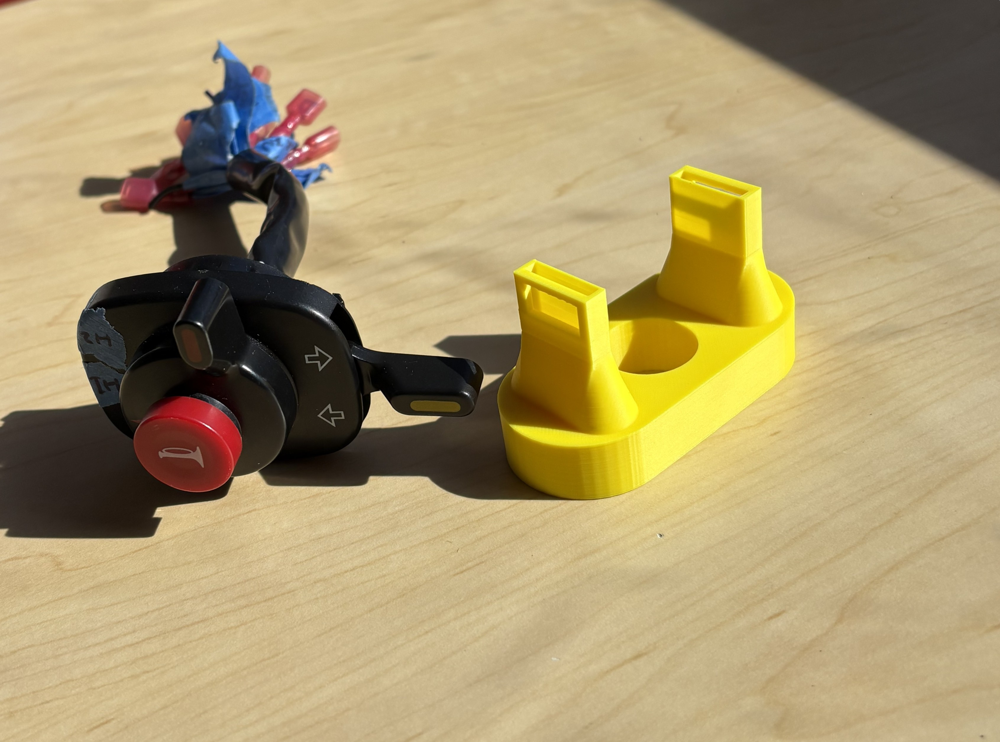
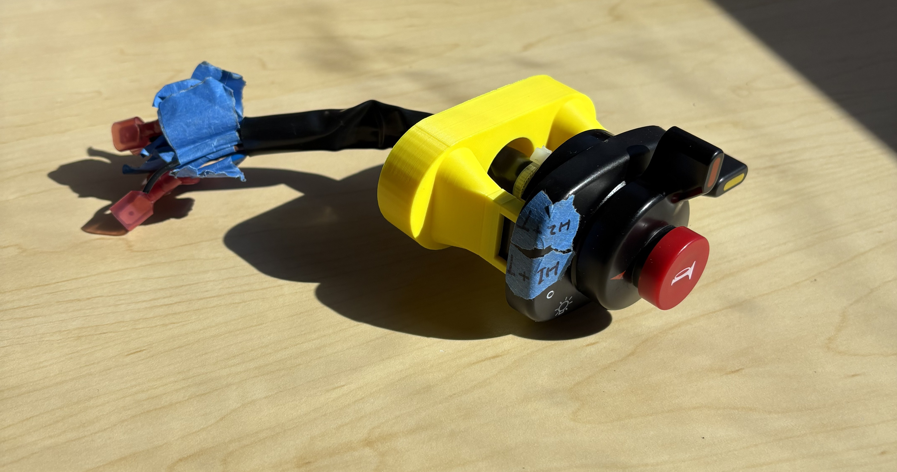
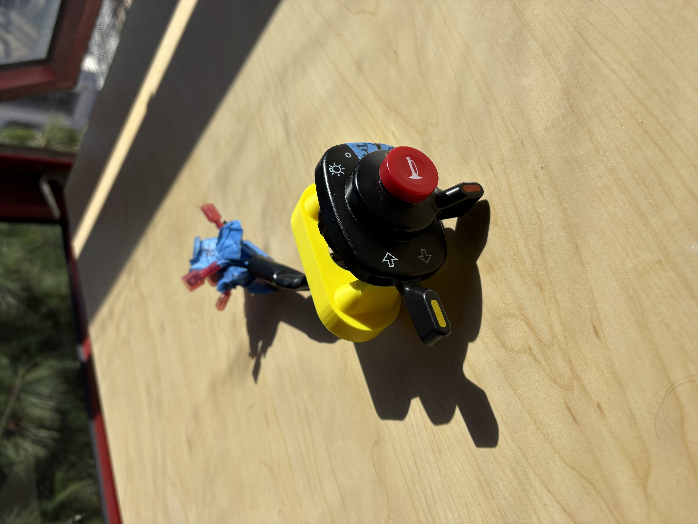
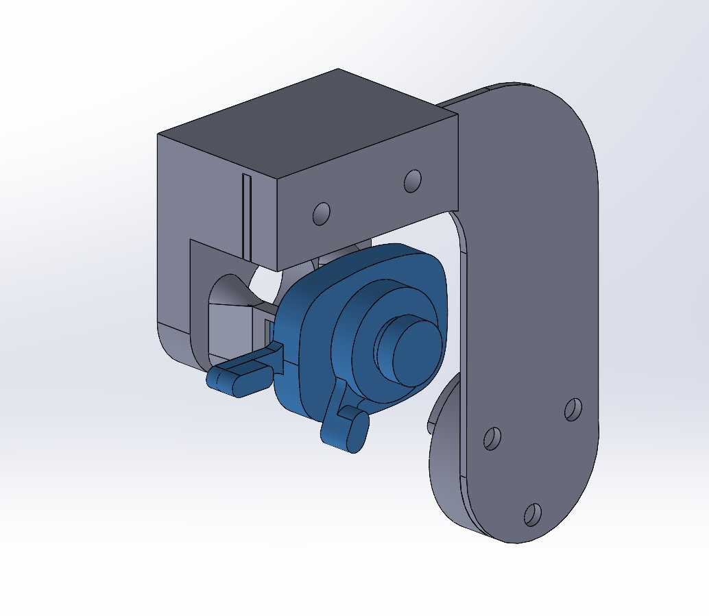

Ackermann Steering System

The Problem
When a car turns, the inner and outer wheels trace arcs of different radii. If both wheels point at the same angle — parallel steering — the outer tire scrubs sideways, fighting the turn. Ackermann geometry solves this by angling the inner wheel more sharply than the outer, so both wheels steer toward a common turning center.
For Triton Solar Car, the challenge wasn't just choosing Ackermann geometry — it was choosing how much. Full Ackermann minimizes tire scrub at low speeds. Partial Ackermann distributes lateral load more evenly at higher speeds. A solar race car operates across both regimes. The task: run a full trade study and design a linkage that found the right balance.
The Geometry Work
The starting point was physical measurement — locating exactly where the kingpins sat and where the rack and pinion lived on the car. From there, I drew construction lines in SolidWorks from the rear axle centerpoint through each kingpin axis. The key insight from research: the tie rod endpoints have to fall somewhere on those construction lines for the geometry to produce true Ackermann behavior. That gave me a constraint to work within rather than a blank canvas.
From there it was iteration. I tested different tie rod pickup positions along those lines, each one producing a different Ackermann percentage, and evaluated the tradeoff between scrub elimination at low speed and lateral load distribution at higher speed. The final geometry — 21.5° inner / 16.8° outer — was the point where scrubbing was effectively eliminated without overcorrecting into full Ackermann, which would have loaded the outer tire too aggressively in faster corners.

The Kingpin Axis Problem
When the suspension team's design came in, the kingpin geometry introduced a complication — the axis wasn't rotating purely about the Y-axis as a simplified model would assume. The actual physical setup meant the rotation had a Z-component too, which changes how you think about the load cases going through that joint.
The honest answer is this is a first-generation car. No one on the team had built one before. The call I made was to assume a simplified straight axis for the analysis and proceed — because one of the things you learn quickly in engineering is that you can't calculate everything to the T. Sometimes the right move is to make a defensible assumption, document it, build the part, and see what the real world tells you. The design is on the car now. That's the test that matters.
A perfect model of a flawed input is still a flawed output. We made a reasonable assumption, built the part, and committed to learning from the physical result — which is how first-generation engineering actually works.
FEA Validation
To validate the design before cutting steel, the team ran static structural analysis in ANSYS under worst-case combined front kingpin loading — simulating a hard turn combined with an impact event, which maximizes stress through the linkage simultaneously. I worked through interpreting the outputs and understanding what the stress distribution meant for our geometry and material choice.
worst-case combined loading
partial Ackermann geometry
optimized for cornering load

Fabrication
Fabrication started with CNC wood prototypes — a fast, cheap way to validate the geometry before committing to steel. Once the linkage positions checked out on the car, the parts were recut in steel plate and assembled. Getting the tie rod endpoints to land in exactly the right positions was the critical tolerance — small deviations there change the effective Ackermann percentage, so fitting was done carefully against the SolidWorks reference geometry.




Steering Wheel Control Module
Alongside the steering geometry, I'm designing the ergonomics side — a button module backplate that houses horn, turn signals, lighting, and driver comms. The constraint is ASC regulations require all controls to rotate with the wheel, which means the housing needs to clip onto the button module and turn with the column rather than being fixed to the chassis.
The hardest part was spatial. The button module had an unusual elliptical profile with awkward dimensions, so I modelled it fully in CAD before even touching the assembly — getting every curve and hole position exact so the housing would actually be snug rather than floating around inside the wheel. From there it was a positioning problem: figuring out the right standoff distance to sit the module close to the driver without fouling the wheel structure, which meant live iteration in the assembly moving parts around until the clearances felt right.
I've 3D printed several iterations. The typical failure mode is either the mounting holes coming out slightly oversized from print shrinkage, or the curved face not quite matching the mold contour. Each print tells me something specific to fix — it's a tighter feedback loop than refining a model in isolation.



A Lesson in Simplicity
My first CAD design for the backplate holder was overengineered. I added features, brackets, and geometry that solved problems I hadn't actually encountered yet — designing defensively against hypothetical failure modes instead of building for what the part actually needed to do.
One of the most valuable engineering lessons: never make something more complicated than it needs to be. Complexity is a liability, not a signal of effort.
The image below is that first design — you can see where I went too far. The next iteration strips it back to the functional core. Same job, less to go wrong.

I'm currently in the process of redesigning a simpler version — stripping it back to what the part actually needs to do and nothing more.